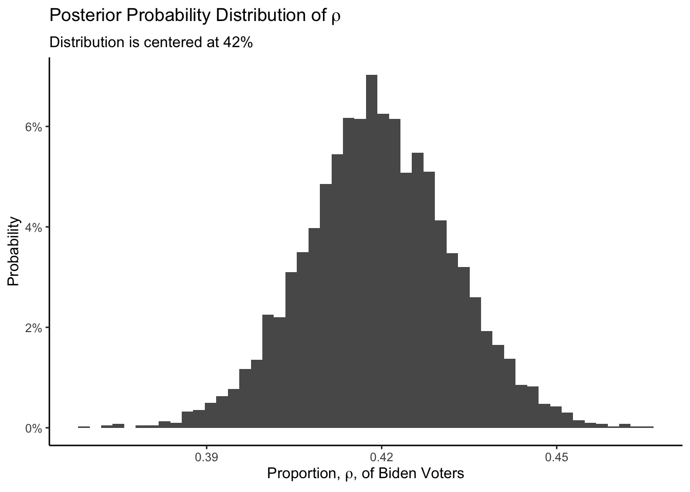
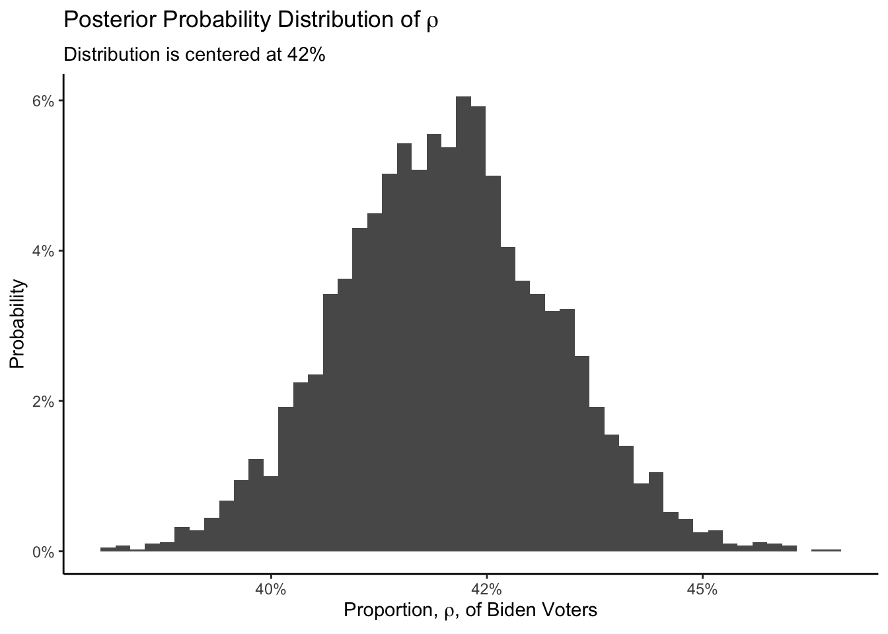

4 Models
In Chapter 3, we learned about sampling, the process of gathering data to answer our questions. In this chapter, we will learn about constructing models, creating the data generating mechanism which we will use to answer our questions.
We always use the Cardinal Virtues. Wisdom helps us to clarify the questions with which we begin. We build the Preceptor Table which, if no data were missing, would allow us to answer the question. We check for validity. Justice creates the Population Table and examines the assumptions of stability, representativeness, and unconfoundedness. With Courage, we create a data generating mechanism. Temperance helps us to use that DGM to answer the questions with which we began.
As (almost) always, we start by loading the tidyverse package.
In Chapter 3, we estimated the proportion, \(\rho\), of red beans in an urn. In the real world, of course, we never mess with urns. But we are often interested in unknown proportions. For example, what proportion of US citizens support specific political candidates. Imagine that it is March 15, 2024 and we want to know \(\rho\), the percentage of people who will vote for President Joe Biden in the 2024 presidential election. How many beads are for Biden?
Use the Cardinal Virtues to guide your thinking.
4.1 Wisdom

Wisdom requires the creation of a Preceptor Table, an examination of our data, and a determination, using the concept of “validity,” as to whether or not we can (reasonably!) assume that the two come from the same population. We begin with a question:
What are the odds, if we just look at two voters, both will have voted for Biden?
4.1.1 Preceptor Table
A Preceptor Table is a table with rows and columns, such that, if no data is missing, we can easily answer our questions.
| Preceptor Table | |
|---|---|
| Voter ID | Voted for Biden |
| 1 | 0 |
| 2 | 0 |
| ... | ... |
| 200 | 1 |
| 201 | 0 |
| ... | ... |
| 2078 | 1 |
| 2079 | 0 |
| ... | ... |
The rows in the Preceptor Table correspond to . . . what, exactly? There are a lot of possibilities. They could include all those eligible to vote or all those actually registered to vote or all those who actually did vote. We need to be precise. Given the question, we only have rows for those who did vote in November 2024. In March, of course, we don’t know who those rows will correspond to, nor even how many rows there will be.
The outcome in the Preceptor Table is the status, TRUE or FALSE, represented as 1 or 0, of voting or not for Biden. Given the question, we don’t need to know for whom each vote was cast. That is, the question does not, strictly speaking, even ask who will win the election. And that might be correct. But, as we go through the Cardinal Virtues, we need to constantly return to the starting question, often to modify it, given the limits of our data and our models. You almost never start with the question that you eventually answer.
There are no covariates or treatments to consider, so the Preceptor Table only has outcome (and ID) columns. There is only one outcome and so the model is predictive, not causal. A causal model requires (at least two) potential outcomes, each the result of a different treatment.
Once we have all the information in the Preceptor Table, it is easy to create a cpomputer simulation which, for example, draws 1,000 pairs of voters at random from the table, checks to see if they both voted for Biden, and then report the percentage of the 1,000 which meet this criteria.
4.1.2 EDA
The data we have come from a YouGov poll (pdf) of 1,559 US adult citizens, conducted March 10 - 12, 2024. There are many questions in the poll. For the purpose of answering our question, the most relevant one is:
If an election for president were going to be held now and the Democratic nominee was oe Biden and the Republican nominee was Donald Trump, would you vote for…
The allowed choice are “Joe Biden,” “Donald Trump,” “Other,” “Not Sure,” and “I would not vote.” 42% of those polled indicated Joe Biden. Although rounding makes it impossible to know for sure, we will assume that 655 of the 1,559 “US adult citizens” would vote for Biden. Our data looks like:
| Polling Data | |
|---|---|
| Poll ID | Would Vote for Biden |
| 1 | 0 |
| 2 | 0 |
| ... | ... |
| 200 | 1 |
| 201 | 0 |
| ... | ... |
| 1,559 | 1 |
There are key differences between our data table and our Preceptor Table, despite their superficial similarities.
Our Polling Data includes exactly 1,559 rows. We don’t know how many rows are in our Preceptor Table because we don’t know, today, how many people will vote in November 2024.
The ID column is labeled “Voter ID” in the Preceptor Table and “Poll ID” in the Polling Data. In many ways, the ID doesn’t matter. The person labeled “2” in the first table, for example, has no necessary connection to the person labeled “2” in the second table. The numbers don’t mean anything. But, conceptually, having different labels helps to highlight the issue of sampling and concerns about representativeness, concerns which we will address under Justice.
The variable labels differ. “Voted for Biden” is not the same thing as “Would Vote for Biden.” Indeed, the two columns represent very different things.
4.1.3 Validity
The last step of Wisdom is to decide whether or not we can consider the units from the Preceptor Table and the units from the data to have been drawn from the same population. Validity involves the columns of our data set. Is the meaning of our columns consistent across the different data sources? Or, rather, are they consistent enough to allow us to “stack” them on top of one another in order to construct the Population Table? Although there are some legitimate concerns, as discussed above, the validity assumption is close enough to true for us to proceed.
4.2 Justice

Justice examines the assumptions of stability, representativeness, and unconfoundedness with regard to the Population Table.
4.2.1 Population Table
We use The Population Table to acknowledge the wider source from which we could have collected our data. It includes rows from three sources: the data for units we want to have (the Preceptor Table), the data for units which we have (our actual data), and the data for units we do not care about (the rest of the population, not included in the data or in the Preceptor Table). Consider:
| Source | Time | ID | Biden |
|---|---|---|---|
… |
February 2024 |
1 |
? |
… |
February 2024 |
200 |
? |
… |
February 2024 |
976 |
? |
… |
… |
… |
… |
Data |
March 2024 |
1 |
0 |
Data |
March 2024 |
200 |
1 |
Data |
March 2024 |
… |
… |
Data |
March 2024 |
1559 |
1 |
… |
… |
… |
… |
… |
October 2024 |
1 |
? |
… |
October 2024 |
200 |
? |
… |
October 2024 |
2025 |
? |
… |
… |
… |
… |
Preceptor Table |
November 2024 |
1 |
1 |
Preceptor Table |
November 2024 |
200 |
0 |
Preceptor Table |
November 2024 |
2078 |
1 |
… |
… |
… |
… |
… |
December 2024 |
1 |
? |
… |
December 2024 |
200 |
? |
… |
December 2024 |
2300 |
? |
Every row in a Population Table corresponds to a unit/time combination. This is different from the Preceptor Table and the data, in both of which each row is for a unit. The entire Preceptor Table and data each have a specific time associated with them, even if that moment corresponds to a few days or longer. Nothing in this imperfect world is ever instantaneous.
A Population Table will usually have several types of columns: id, time, covariates, and outcome(s). There are no covariates in this simple example, but we will use them in later chapters.
Now that we have created our Population Table, we can analyze the key assumptions of stability, representativeness and unconfoundedness.
4.2.2 Stability
Stability involves time. Is the model — meaning both the mathematical formula and the value of the parameters — stable over time?
4.2.3 Representativeness
Representativeness involves the data rows, specifically the rows for which we have data versus the rows for which we might have had data. Are the rows that we do have data for representative of the rows for which we do not have data?
The sampling mechanism is the technical term for the process by which some people were sampled and some were not. We hope that all members of the population have the same chance of being sampled, or else our data might be unrepresentative of the larger population. Another term for this would be having a “biased” sample. Almost all samples have some bias, but we must make a judgement call to see if the data we have is close enough to the data we want (i.e., the Preceptor Table) that we can consider both as coming from the same population.
4.2.4 Unconfoundedness
Unconfoundedness involves the possible correlation between treatment assignment and the potential outcomes. It is only a concern for causal models. Since this is a predictive model, we do not have to worry about unconfoundedness. There is no “treatment” which might be confounded with anything.
4.3 Courage

Justice verifies the Population Table. Courage creates a mathematical model which connects the outcome variable to the covariates, if any. Then, using code, we create a fitted model, including posterior probability distributions for all the unknown parameters.
Given that the polling problem is conceptually similar to the beads-in-an-urn problem, it is useful to perform the same back-of-the-envelope calculation we did in Chapter 3. To do that, we first need to create the tibble:
Show the code
poll_data <- tibble(biden = c(rep(1, 655),
rep(0, 904)))
slice_sample(poll_data, n = 10)# A tibble: 10 × 1
biden
<dbl>
1 1
2 1
3 0
4 0
5 0
6 1
7 0
8 0
9 0
10 0First, calculate the mean. This is our estimate of the center of the posterior distribution for \(\rho\), the unknown proportion of the voters who support Biden.
Show the code
mean(poll_data$biden)[1] 0.420141142% of the sample support Biden. Second, calculate the standard error of this estimate, by taking the standard deviation of the data and dividing it by the square root of the number of observations.
The standard error is about 1.25%. This suggests that a 95% confidence interval for the true value of \(\rho\) would be:
Show the code
[1] 0.3951316 0.4451506The margin of error, which is another term for two times the standard error, is about 2.5%. This is less than the value of 3.5% given in the pdf. The reason for the difference involves all the technical adjustments which YouGov needs to make to their estimate. We ignore those problems and so our value is too small.
The data generating mechanism, or DGM, is a mathematical formula which mimics the process by which the data comes to us. The DGM for sampling scenarios with only two possible values is called Bernoulli, usually denoted as:
\[ red_i \sim Bernoulli(\rho) \] Each bead \(i\) which we sample can be either red or white. It is convenient to define the model in terms of whether or not the bead was red. If bead \(i\) is red, the value drawn is 1, which is the standard way of representing TRUE. In other words, \(red_i = 1\) means that bead \(i\) was red. Similarly, a white bead is indicated with 0, meaning that it is FALSE that the bead was red. \(\rho\) is the only parameter in a Bernoulli model. It is the probability that a 1, instead of a 0, is drawn. That is, \(\rho\) is the probability of a red bead, which is the same thing as the proportion of red beads in the urn, assuming again that the sampling mechanism is not biased.
We typical estimate the unknown parameter \(\rho\) from the Bernoulli model by using a logit regression:
\[ \rho = \frac{e^{\beta_0}}{1 + e^{\beta_0}} \]
There are generally two parts for a statistical model: family and link function. The family is the probability distribution which generates the randomness in our data. The link function is the mathematical formula which links our data to the unknown parameters in the probability distribution. We will be reviewing these concepts over and over again in the rest of the Primer, so don’t worry if things are a little unclear right now.
4.3.1 Models
Load the brms package:
The brms package provides a user-friendly interface to work with the statistical language Stan, the leading tool for Bayesian model building.
4.3.1.1 Gaussian
The key function in the brms package is brm().
Show the code
fit_1 <- brm(formula = biden ~ 1,
data = poll_data)Compiling Stan program...Trying to compile a simple C fileRunning /Library/Frameworks/R.framework/Resources/bin/R CMD SHLIB foo.c
using C compiler: ‘Apple clang version 15.0.0 (clang-1500.1.0.2.5)’
using SDK: ‘MacOSX14.2.sdk’
clang -arch arm64 -I"/Library/Frameworks/R.framework/Resources/include" -DNDEBUG -I"/Users/dkane/Library/Caches/org.R-project.R/R/renv/cache/v5/R-4.3/aarch64-apple-darwin20/Rcpp/1.0.12/5ea2700d21e038ace58269ecdbeb9ec0/Rcpp/include/" -I"/Users/dkane/Desktop/projects/primer/renv/library/R-4.3/aarch64-apple-darwin20/RcppEigen/include/" -I"/Users/dkane/Desktop/projects/primer/renv/library/R-4.3/aarch64-apple-darwin20/RcppEigen/include/unsupported" -I"/Users/dkane/Desktop/projects/primer/renv/library/R-4.3/aarch64-apple-darwin20/BH/include" -I"/Users/dkane/Library/Caches/org.R-project.R/R/renv/cache/v5/R-4.3/aarch64-apple-darwin20/StanHeaders/2.32.5/b8d6850ef3e330bc108e712679e79443/StanHeaders/include/src/" -I"/Users/dkane/Library/Caches/org.R-project.R/R/renv/cache/v5/R-4.3/aarch64-apple-darwin20/StanHeaders/2.32.5/b8d6850ef3e330bc108e712679e79443/StanHeaders/include/" -I"/Users/dkane/Library/Caches/org.R-project.R/R/renv/cache/v5/R-4.3/aarch64-apple-darwin20/RcppParallel/5.1.7/a45594a00f5dbb073d5ec9f48592a08a/RcppParallel/include/" -I"/Users/dkane/Library/Caches/org.R-project.R/R/renv/cache/v5/R-4.3/aarch64-apple-darwin20/rstan/2.32.5/378a10b6373822761ec78021c105b059/rstan/include" -DEIGEN_NO_DEBUG -DBOOST_DISABLE_ASSERTS -DBOOST_PENDING_INTEGER_LOG2_HPP -DSTAN_THREADS -DUSE_STANC3 -DSTRICT_R_HEADERS -DBOOST_PHOENIX_NO_VARIADIC_EXPRESSION -D_HAS_AUTO_PTR_ETC=0 -include '/Users/dkane/Library/Caches/org.R-project.R/R/renv/cache/v5/R-4.3/aarch64-apple-darwin20/StanHeaders/2.32.5/b8d6850ef3e330bc108e712679e79443/StanHeaders/include/stan/math/prim/fun/Eigen.hpp' -D_REENTRANT -DRCPP_PARALLEL_USE_TBB=1 -I/opt/R/arm64/include -fPIC -falign-functions=64 -Wall -g -O2 -c foo.c -o foo.o
In file included from <built-in>:1:
In file included from /Users/dkane/Library/Caches/org.R-project.R/R/renv/cache/v5/R-4.3/aarch64-apple-darwin20/StanHeaders/2.32.5/b8d6850ef3e330bc108e712679e79443/StanHeaders/include/stan/math/prim/fun/Eigen.hpp:22:
In file included from /Users/dkane/Desktop/projects/primer/renv/library/R-4.3/aarch64-apple-darwin20/RcppEigen/include/Eigen/Dense:1:
In file included from /Users/dkane/Desktop/projects/primer/renv/library/R-4.3/aarch64-apple-darwin20/RcppEigen/include/Eigen/Core:88:
/Users/dkane/Desktop/projects/primer/renv/library/R-4.3/aarch64-apple-darwin20/RcppEigen/include/Eigen/src/Core/util/Macros.h:628:1: error: unknown type name 'namespace'
namespace Eigen {
^
/Users/dkane/Desktop/projects/primer/renv/library/R-4.3/aarch64-apple-darwin20/RcppEigen/include/Eigen/src/Core/util/Macros.h:628:16: error: expected ';' after top level declarator
namespace Eigen {
^
;
In file included from <built-in>:1:
In file included from /Users/dkane/Library/Caches/org.R-project.R/R/renv/cache/v5/R-4.3/aarch64-apple-darwin20/StanHeaders/2.32.5/b8d6850ef3e330bc108e712679e79443/StanHeaders/include/stan/math/prim/fun/Eigen.hpp:22:
In file included from /Users/dkane/Desktop/projects/primer/renv/library/R-4.3/aarch64-apple-darwin20/RcppEigen/include/Eigen/Dense:1:
/Users/dkane/Desktop/projects/primer/renv/library/R-4.3/aarch64-apple-darwin20/RcppEigen/include/Eigen/Core:96:10: fatal error: 'complex' file not found
#include <complex>
^~~~~~~~~
3 errors generated.
make: *** [foo.o] Error 1Start sampling
SAMPLING FOR MODEL 'anon_model' NOW (CHAIN 1).
Chain 1:
Chain 1: Gradient evaluation took 7.4e-05 seconds
Chain 1: 1000 transitions using 10 leapfrog steps per transition would take 0.74 seconds.
Chain 1: Adjust your expectations accordingly!
Chain 1:
Chain 1:
Chain 1: Iteration: 1 / 2000 [ 0%] (Warmup)
Chain 1: Iteration: 200 / 2000 [ 10%] (Warmup)
Chain 1: Iteration: 400 / 2000 [ 20%] (Warmup)
Chain 1: Iteration: 600 / 2000 [ 30%] (Warmup)
Chain 1: Iteration: 800 / 2000 [ 40%] (Warmup)
Chain 1: Iteration: 1000 / 2000 [ 50%] (Warmup)
Chain 1: Iteration: 1001 / 2000 [ 50%] (Sampling)
Chain 1: Iteration: 1200 / 2000 [ 60%] (Sampling)
Chain 1: Iteration: 1400 / 2000 [ 70%] (Sampling)
Chain 1: Iteration: 1600 / 2000 [ 80%] (Sampling)
Chain 1: Iteration: 1800 / 2000 [ 90%] (Sampling)
Chain 1: Iteration: 2000 / 2000 [100%] (Sampling)
Chain 1:
Chain 1: Elapsed Time: 0.1 seconds (Warm-up)
Chain 1: 0.11 seconds (Sampling)
Chain 1: 0.21 seconds (Total)
Chain 1:
SAMPLING FOR MODEL 'anon_model' NOW (CHAIN 2).
Chain 2:
Chain 2: Gradient evaluation took 3.1e-05 seconds
Chain 2: 1000 transitions using 10 leapfrog steps per transition would take 0.31 seconds.
Chain 2: Adjust your expectations accordingly!
Chain 2:
Chain 2:
Chain 2: Iteration: 1 / 2000 [ 0%] (Warmup)
Chain 2: Iteration: 200 / 2000 [ 10%] (Warmup)
Chain 2: Iteration: 400 / 2000 [ 20%] (Warmup)
Chain 2: Iteration: 600 / 2000 [ 30%] (Warmup)
Chain 2: Iteration: 800 / 2000 [ 40%] (Warmup)
Chain 2: Iteration: 1000 / 2000 [ 50%] (Warmup)
Chain 2: Iteration: 1001 / 2000 [ 50%] (Sampling)
Chain 2: Iteration: 1200 / 2000 [ 60%] (Sampling)
Chain 2: Iteration: 1400 / 2000 [ 70%] (Sampling)
Chain 2: Iteration: 1600 / 2000 [ 80%] (Sampling)
Chain 2: Iteration: 1800 / 2000 [ 90%] (Sampling)
Chain 2: Iteration: 2000 / 2000 [100%] (Sampling)
Chain 2:
Chain 2: Elapsed Time: 0.103 seconds (Warm-up)
Chain 2: 0.104 seconds (Sampling)
Chain 2: 0.207 seconds (Total)
Chain 2:
SAMPLING FOR MODEL 'anon_model' NOW (CHAIN 3).
Chain 3:
Chain 3: Gradient evaluation took 3.1e-05 seconds
Chain 3: 1000 transitions using 10 leapfrog steps per transition would take 0.31 seconds.
Chain 3: Adjust your expectations accordingly!
Chain 3:
Chain 3:
Chain 3: Iteration: 1 / 2000 [ 0%] (Warmup)
Chain 3: Iteration: 200 / 2000 [ 10%] (Warmup)
Chain 3: Iteration: 400 / 2000 [ 20%] (Warmup)
Chain 3: Iteration: 600 / 2000 [ 30%] (Warmup)
Chain 3: Iteration: 800 / 2000 [ 40%] (Warmup)
Chain 3: Iteration: 1000 / 2000 [ 50%] (Warmup)
Chain 3: Iteration: 1001 / 2000 [ 50%] (Sampling)
Chain 3: Iteration: 1200 / 2000 [ 60%] (Sampling)
Chain 3: Iteration: 1400 / 2000 [ 70%] (Sampling)
Chain 3: Iteration: 1600 / 2000 [ 80%] (Sampling)
Chain 3: Iteration: 1800 / 2000 [ 90%] (Sampling)
Chain 3: Iteration: 2000 / 2000 [100%] (Sampling)
Chain 3:
Chain 3: Elapsed Time: 0.102 seconds (Warm-up)
Chain 3: 0.08 seconds (Sampling)
Chain 3: 0.182 seconds (Total)
Chain 3:
SAMPLING FOR MODEL 'anon_model' NOW (CHAIN 4).
Chain 4:
Chain 4: Gradient evaluation took 2.7e-05 seconds
Chain 4: 1000 transitions using 10 leapfrog steps per transition would take 0.27 seconds.
Chain 4: Adjust your expectations accordingly!
Chain 4:
Chain 4:
Chain 4: Iteration: 1 / 2000 [ 0%] (Warmup)
Chain 4: Iteration: 200 / 2000 [ 10%] (Warmup)
Chain 4: Iteration: 400 / 2000 [ 20%] (Warmup)
Chain 4: Iteration: 600 / 2000 [ 30%] (Warmup)
Chain 4: Iteration: 800 / 2000 [ 40%] (Warmup)
Chain 4: Iteration: 1000 / 2000 [ 50%] (Warmup)
Chain 4: Iteration: 1001 / 2000 [ 50%] (Sampling)
Chain 4: Iteration: 1200 / 2000 [ 60%] (Sampling)
Chain 4: Iteration: 1400 / 2000 [ 70%] (Sampling)
Chain 4: Iteration: 1600 / 2000 [ 80%] (Sampling)
Chain 4: Iteration: 1800 / 2000 [ 90%] (Sampling)
Chain 4: Iteration: 2000 / 2000 [100%] (Sampling)
Chain 4:
Chain 4: Elapsed Time: 0.101 seconds (Warm-up)
Chain 4: 0.098 seconds (Sampling)
Chain 4: 0.199 seconds (Total)
Chain 4: Notes:
brm()produces a great deal of output, as you can see above. This is useful if there is some sort of problem. But, most of the time, we don’t care. So we suppress the output in the rest of the Primer.We almost always assign the result of a
brm()call to an object, as here. By convention, the name of that object begins with “fit” because it is a fitted model object. This model was created quickly but larger models take longer. So, we assign the result to an object so we don’t need to recreate it.The first argument to
brm()isformula. This is provided using the R formula syntax in which the dependent variable,redis separated from the independent variables by a tilde:~. This is the standard approach in almost all R model estimating functions. In this case, the only independent variable is a constant, which is represented with a1.The second argument to
brm()isdata, which is a tibble containing the data used to estimate the model parameters. The variables specified in theformulamust match the variables in the tibble which is passed in, which is .
Print out the model object.
Show the code
fit_1 Family: gaussian
Links: mu = identity; sigma = identity
Formula: biden ~ 1
Data: poll_data (Number of observations: 1559)
Draws: 4 chains, each with iter = 2000; warmup = 1000; thin = 1;
total post-warmup draws = 4000
Population-Level Effects:
Estimate Est.Error l-95% CI u-95% CI Rhat Bulk_ESS Tail_ESS
Intercept 0.42 0.01 0.39 0.44 1.00 3278 2459
Family Specific Parameters:
Estimate Est.Error l-95% CI u-95% CI Rhat Bulk_ESS Tail_ESS
sigma 0.49 0.01 0.48 0.51 1.00 3648 2816
Draws were sampled using sampling(NUTS). For each parameter, Bulk_ESS
and Tail_ESS are effective sample size measures, and Rhat is the potential
scale reduction factor on split chains (at convergence, Rhat = 1).There are many details. We will take a first pass here, leaving out elements which we will return to in later chapters. Highlights:
The “Family” is “gaussian,” which is the default value for the
familyargument inbrms(). In the next example, we will provide thefamilyargument explicitly. Gaussian is another term for the normal distribution. This is almost certainly a mistake, but “discovering” this mistake and then fixing it is a useful exercise.The “Links” are “identity” for both “mu” and “sigma.” Recall the the gaussian/normal distribution is specified as \(N(\mu, \sigma^2)\) in which \(\mu\), or “mu,” is the parameter for the mean or center of the distribution and \(\sigma\), or “sigma,” is the parameter for the standard deviation or spread of the distribution.
The “Formula” is
biden ~ 1, which is what we passed in to theformulaargument when we calledbrm().The “Data” is
poll_data, which is what we passed in to thedataargument when we calledbrm(). Note the reminder that there are 1,559 observations. Never hurts to check that the reported number of observations matches what you expect.Fitting Bayesian models is computationally complex. The information about “Draws,” and the values for “Rhat,” “Bulk_ESS,” and “Tail_ESS” refer to those complexities. The bottom message gives a basic explanation. Don’t worry about any of that now.
The “Intercept” is the key part of the model. Because the family is (incorrectly!) Gaussian and the link function an identity, the actual model we are estimating looks like:
\[ biden_i = \mu + \epsilon_i \]
with \(\epsilon_i \sim N(0, \sigma^2)\). \(y_i\) is the height of male \(i\). \(\mu\) is true proportion of Biden voters. \(\epsilon_i\) is the “error term,” the difference between the vote of person \(i\) and the true proportion of Biden voters. The obvious problem with this is that \(\mu\), also called the “Intercept,” is about 0.42. The value of biden is either 0 or 1. So, the value of \(\epsilon\) is either -0.42 or + 0.58. No other value is possible. But that makes no sense if \(\epsilon_i \sim N(0, \sigma^2)\)! This will cause problems soon.
Ignore that Gaussian/Bernoulli issue, we have an “Intercept” (or \(\mu\)) value of 0.42. Note the complexity involved in even this simple model. We have multiple ways of describing the same concept: the true proportion of Biden voters. First, we have \(\rho\), a mathematical symbol associated with Bernoulli models and to which we will return. Second, we have
1, meaning the symbol in the formula:biden ~ 1. This is an “intercept only” model, one with no covariates. Third, we have \(\mu\), the standard symbol for the intercept in a intercept-only linear or Gaussian model. Fourth, we have the word “Intercept,” as in the printout from the fitted model object. In other words, \(\rho\), \(1\), \(\mu\), and Intercept all refer to the same thing!The “Est.Error” is, more or less, the same thing as the standard error of our 0.42 estimate for the intercept. The full value is 0.0123, which is very close to the value we calculated by hand above.
The lower and upper bounds of the 95% confidence interval are indicated by “l-95% CI” and “u-95% CI.” The number also match, subject to rounding, our calculations. (We can’t use the by-hand calculations with more complex models, otherwise we would have no need for brms!)
The “sigma” variable in the “Family Specific Parameters” section refers to out estimate of \(\sigma\), given the assumed truth of a gaussian error term. Since that assumption is clearly false, we won’t waste time interpreting the results here.
Once we have a fitted model, we can use that model, along with the R packages tidybayes and bayesplots, to answer various questions.
We can generate a posterior distribution for \(\rho\) with:
fit_1 |>
add_epred_draws(newdata = tibble(.rows = 1))# A tibble: 4,000 × 5
# Groups: .row [1]
.row .chain .iteration .draw .epred
<int> <int> <int> <int> <dbl>
1 1 NA NA 1 0.424
2 1 NA NA 2 0.418
3 1 NA NA 3 0.432
4 1 NA NA 4 0.412
5 1 NA NA 5 0.429
6 1 NA NA 6 0.411
7 1 NA NA 7 0.405
8 1 NA NA 8 0.408
9 1 NA NA 9 0.424
10 1 NA NA 10 0.429
# ℹ 3,990 more rowsThe first argument to the key function, add_epred_draws(), is newdata. We often want to examine the behavior of the model with new data sets, data which was not used in model estimation. The object passed as newdata is generally a tibble, with a row corresponding to each set of values for the independet variables. In this case, we have an intercept-only model, which means that there are no independent variables, other than the intercept, which does not need to be explicitly passed in. So, newdata is a tibble with no variables and one row.
tibble(.rows = 1)# A tibble: 1 × 0The resulting tibble includes 4,000 rows, each of which is a draw from the posterior distribution of \(\rho\). (Recall that \(\rho\) and \(\mu\) refer to the same thing.) You can ignore that columns named .row, .chain, and .iteration. The .draw variable just keeps count of the draws. The key variable is .epred, which us a draw from the posterior distribution of \(\rho\). The “e” in .epred stands for expected value. Grahically, we have:
fit_1 |>
add_epred_draws(newdata = tibble(.rows = 1)) |>
ggplot(aes(x = .epred)) +
geom_histogram(aes(y = after_stat(count/sum(count))),
bins = 50) +
labs(title = expression(paste("Posterior Probability Distribution of ", rho)),
subtitle = "Distribution is centered at 42%",
x = expression(paste("Proportion, ", rho, ", of Biden Voters")),
y = "Probability") +
scale_x_continuous(labels = scales::number_format()) +
scale_y_continuous(labels = scales::percent_format()) +
theme_classic()
Even more useful than posteriors of the parameters in the model are predictions we can make with the model. The key function for exploring those predictions is add_predicted_draws(). This function behaves similarly to add_epred_draws(). In both cases, we need to provide the value for the newdata argument, generally a tibble with a column for all the variables used in the fitted model. Again, because this is an intercept-only model, there is no need for columns in the newdata tibble. No variables are used in fit_1.
fit_1 |>
add_predicted_draws(newdata = tibble(.rows = 1))# A tibble: 4,000 × 5
# Groups: .row [1]
.row .chain .iteration .draw .prediction
<int> <int> <int> <int> <dbl>
1 1 NA NA 1 0.619
2 1 NA NA 2 0.112
3 1 NA NA 3 0.449
4 1 NA NA 4 -0.436
5 1 NA NA 5 0.239
6 1 NA NA 6 0.298
7 1 NA NA 7 0.829
8 1 NA NA 8 0.642
9 1 NA NA 9 0.350
10 1 NA NA 10 1.29
# ℹ 3,990 more rowsThe columns which result are the same as with add_epred_draws() except that .epred is replaced with .prediction. (The reason that all the variable names have a leading . is that this convention makes it less likely, but not imossible, that they will conflict with any variable names in the newdata tibble.)
A glance at the result shows the problem: .prediction takes on a variety of values. But that is impossible! By definition, the only possible values are 0/1. We must have made a mistake in specifying the model. Another way to see the model is to perform a “posterior predictive check,” a comparison of model predictions with your actual data. The bayesplot package includes the pp_check() function for that purpose.
\(y\) is the original data. \(y_rep\) is a replication of the data, using the fit_1 model. In other words, we “pretend” that fit_1 is the true model. We then create 10 versions of the output data, as created by add_predictive_draws(), each the same size are our original data, which is 1,559 observations in this case. We then graph both \(y\) and the 10 versions of \(y_rep\).
As the graphic makes clear, we have a serious problem. The data, meaning the variable biden, which is refered to as \(y\) in the plot, is always either 0 or 1, hence the two spikes in the plot. \(y_rep\), on the other hand, is a continuous variable with a range of -0.8 to about 1.8. That is a contradiction! If our model were true, then the replicated values — the posterior predictions — would look a lot like our original data.
Sadly, most usage of pp_check() does not produce such a clear cut conclusion. We need to decide if \(y\) and \(y_rep\) are “close enough” that our model can be used as if it were true.
4.3.1.2 Bernoulli
We have discovered that our initial assumption about the correct mathematical formula for the data generating mechanism was mistaken. Instead of a gaussion (or Normal) probability model, we should use a Bernoulli model. We must modify our call to brm() as follows:
Running /Library/Frameworks/R.framework/Resources/bin/R CMD SHLIB foo.c
using C compiler: ‘Apple clang version 15.0.0 (clang-1500.1.0.2.5)’
using SDK: ‘MacOSX14.2.sdk’
clang -arch arm64 -I"/Library/Frameworks/R.framework/Resources/include" -DNDEBUG -I"/Users/dkane/Library/Caches/org.R-project.R/R/renv/cache/v5/R-4.3/aarch64-apple-darwin20/Rcpp/1.0.12/5ea2700d21e038ace58269ecdbeb9ec0/Rcpp/include/" -I"/Users/dkane/Desktop/projects/primer/renv/library/R-4.3/aarch64-apple-darwin20/RcppEigen/include/" -I"/Users/dkane/Desktop/projects/primer/renv/library/R-4.3/aarch64-apple-darwin20/RcppEigen/include/unsupported" -I"/Users/dkane/Desktop/projects/primer/renv/library/R-4.3/aarch64-apple-darwin20/BH/include" -I"/Users/dkane/Library/Caches/org.R-project.R/R/renv/cache/v5/R-4.3/aarch64-apple-darwin20/StanHeaders/2.32.5/b8d6850ef3e330bc108e712679e79443/StanHeaders/include/src/" -I"/Users/dkane/Library/Caches/org.R-project.R/R/renv/cache/v5/R-4.3/aarch64-apple-darwin20/StanHeaders/2.32.5/b8d6850ef3e330bc108e712679e79443/StanHeaders/include/" -I"/Users/dkane/Library/Caches/org.R-project.R/R/renv/cache/v5/R-4.3/aarch64-apple-darwin20/RcppParallel/5.1.7/a45594a00f5dbb073d5ec9f48592a08a/RcppParallel/include/" -I"/Users/dkane/Library/Caches/org.R-project.R/R/renv/cache/v5/R-4.3/aarch64-apple-darwin20/rstan/2.32.5/378a10b6373822761ec78021c105b059/rstan/include" -DEIGEN_NO_DEBUG -DBOOST_DISABLE_ASSERTS -DBOOST_PENDING_INTEGER_LOG2_HPP -DSTAN_THREADS -DUSE_STANC3 -DSTRICT_R_HEADERS -DBOOST_PHOENIX_NO_VARIADIC_EXPRESSION -D_HAS_AUTO_PTR_ETC=0 -include '/Users/dkane/Library/Caches/org.R-project.R/R/renv/cache/v5/R-4.3/aarch64-apple-darwin20/StanHeaders/2.32.5/b8d6850ef3e330bc108e712679e79443/StanHeaders/include/stan/math/prim/fun/Eigen.hpp' -D_REENTRANT -DRCPP_PARALLEL_USE_TBB=1 -I/opt/R/arm64/include -fPIC -falign-functions=64 -Wall -g -O2 -c foo.c -o foo.o
In file included from <built-in>:1:
In file included from /Users/dkane/Library/Caches/org.R-project.R/R/renv/cache/v5/R-4.3/aarch64-apple-darwin20/StanHeaders/2.32.5/b8d6850ef3e330bc108e712679e79443/StanHeaders/include/stan/math/prim/fun/Eigen.hpp:22:
In file included from /Users/dkane/Desktop/projects/primer/renv/library/R-4.3/aarch64-apple-darwin20/RcppEigen/include/Eigen/Dense:1:
In file included from /Users/dkane/Desktop/projects/primer/renv/library/R-4.3/aarch64-apple-darwin20/RcppEigen/include/Eigen/Core:88:
/Users/dkane/Desktop/projects/primer/renv/library/R-4.3/aarch64-apple-darwin20/RcppEigen/include/Eigen/src/Core/util/Macros.h:628:1: error: unknown type name 'namespace'
namespace Eigen {
^
/Users/dkane/Desktop/projects/primer/renv/library/R-4.3/aarch64-apple-darwin20/RcppEigen/include/Eigen/src/Core/util/Macros.h:628:16: error: expected ';' after top level declarator
namespace Eigen {
^
;
In file included from <built-in>:1:
In file included from /Users/dkane/Library/Caches/org.R-project.R/R/renv/cache/v5/R-4.3/aarch64-apple-darwin20/StanHeaders/2.32.5/b8d6850ef3e330bc108e712679e79443/StanHeaders/include/stan/math/prim/fun/Eigen.hpp:22:
In file included from /Users/dkane/Desktop/projects/primer/renv/library/R-4.3/aarch64-apple-darwin20/RcppEigen/include/Eigen/Dense:1:
/Users/dkane/Desktop/projects/primer/renv/library/R-4.3/aarch64-apple-darwin20/RcppEigen/include/Eigen/Core:96:10: fatal error: 'complex' file not found
#include <complex>
^~~~~~~~~
3 errors generated.
make: *** [foo.o] Error 1
SAMPLING FOR MODEL 'anon_model' NOW (CHAIN 1).
Chain 1:
Chain 1: Gradient evaluation took 6.3e-05 seconds
Chain 1: 1000 transitions using 10 leapfrog steps per transition would take 0.63 seconds.
Chain 1: Adjust your expectations accordingly!
Chain 1:
Chain 1:
Chain 1: Iteration: 1 / 2000 [ 0%] (Warmup)
Chain 1: Iteration: 200 / 2000 [ 10%] (Warmup)
Chain 1: Iteration: 400 / 2000 [ 20%] (Warmup)
Chain 1: Iteration: 600 / 2000 [ 30%] (Warmup)
Chain 1: Iteration: 800 / 2000 [ 40%] (Warmup)
Chain 1: Iteration: 1000 / 2000 [ 50%] (Warmup)
Chain 1: Iteration: 1001 / 2000 [ 50%] (Sampling)
Chain 1: Iteration: 1200 / 2000 [ 60%] (Sampling)
Chain 1: Iteration: 1400 / 2000 [ 70%] (Sampling)
Chain 1: Iteration: 1600 / 2000 [ 80%] (Sampling)
Chain 1: Iteration: 1800 / 2000 [ 90%] (Sampling)
Chain 1: Iteration: 2000 / 2000 [100%] (Sampling)
Chain 1:
Chain 1: Elapsed Time: 0.117 seconds (Warm-up)
Chain 1: 0.133 seconds (Sampling)
Chain 1: 0.25 seconds (Total)
Chain 1:
SAMPLING FOR MODEL 'anon_model' NOW (CHAIN 2).
Chain 2:
Chain 2: Gradient evaluation took 3.4e-05 seconds
Chain 2: 1000 transitions using 10 leapfrog steps per transition would take 0.34 seconds.
Chain 2: Adjust your expectations accordingly!
Chain 2:
Chain 2:
Chain 2: Iteration: 1 / 2000 [ 0%] (Warmup)
Chain 2: Iteration: 200 / 2000 [ 10%] (Warmup)
Chain 2: Iteration: 400 / 2000 [ 20%] (Warmup)
Chain 2: Iteration: 600 / 2000 [ 30%] (Warmup)
Chain 2: Iteration: 800 / 2000 [ 40%] (Warmup)
Chain 2: Iteration: 1000 / 2000 [ 50%] (Warmup)
Chain 2: Iteration: 1001 / 2000 [ 50%] (Sampling)
Chain 2: Iteration: 1200 / 2000 [ 60%] (Sampling)
Chain 2: Iteration: 1400 / 2000 [ 70%] (Sampling)
Chain 2: Iteration: 1600 / 2000 [ 80%] (Sampling)
Chain 2: Iteration: 1800 / 2000 [ 90%] (Sampling)
Chain 2: Iteration: 2000 / 2000 [100%] (Sampling)
Chain 2:
Chain 2: Elapsed Time: 0.117 seconds (Warm-up)
Chain 2: 0.108 seconds (Sampling)
Chain 2: 0.225 seconds (Total)
Chain 2:
SAMPLING FOR MODEL 'anon_model' NOW (CHAIN 3).
Chain 3:
Chain 3: Gradient evaluation took 3.2e-05 seconds
Chain 3: 1000 transitions using 10 leapfrog steps per transition would take 0.32 seconds.
Chain 3: Adjust your expectations accordingly!
Chain 3:
Chain 3:
Chain 3: Iteration: 1 / 2000 [ 0%] (Warmup)
Chain 3: Iteration: 200 / 2000 [ 10%] (Warmup)
Chain 3: Iteration: 400 / 2000 [ 20%] (Warmup)
Chain 3: Iteration: 600 / 2000 [ 30%] (Warmup)
Chain 3: Iteration: 800 / 2000 [ 40%] (Warmup)
Chain 3: Iteration: 1000 / 2000 [ 50%] (Warmup)
Chain 3: Iteration: 1001 / 2000 [ 50%] (Sampling)
Chain 3: Iteration: 1200 / 2000 [ 60%] (Sampling)
Chain 3: Iteration: 1400 / 2000 [ 70%] (Sampling)
Chain 3: Iteration: 1600 / 2000 [ 80%] (Sampling)
Chain 3: Iteration: 1800 / 2000 [ 90%] (Sampling)
Chain 3: Iteration: 2000 / 2000 [100%] (Sampling)
Chain 3:
Chain 3: Elapsed Time: 0.114 seconds (Warm-up)
Chain 3: 0.111 seconds (Sampling)
Chain 3: 0.225 seconds (Total)
Chain 3:
SAMPLING FOR MODEL 'anon_model' NOW (CHAIN 4).
Chain 4:
Chain 4: Gradient evaluation took 3.2e-05 seconds
Chain 4: 1000 transitions using 10 leapfrog steps per transition would take 0.32 seconds.
Chain 4: Adjust your expectations accordingly!
Chain 4:
Chain 4:
Chain 4: Iteration: 1 / 2000 [ 0%] (Warmup)
Chain 4: Iteration: 200 / 2000 [ 10%] (Warmup)
Chain 4: Iteration: 400 / 2000 [ 20%] (Warmup)
Chain 4: Iteration: 600 / 2000 [ 30%] (Warmup)
Chain 4: Iteration: 800 / 2000 [ 40%] (Warmup)
Chain 4: Iteration: 1000 / 2000 [ 50%] (Warmup)
Chain 4: Iteration: 1001 / 2000 [ 50%] (Sampling)
Chain 4: Iteration: 1200 / 2000 [ 60%] (Sampling)
Chain 4: Iteration: 1400 / 2000 [ 70%] (Sampling)
Chain 4: Iteration: 1600 / 2000 [ 80%] (Sampling)
Chain 4: Iteration: 1800 / 2000 [ 90%] (Sampling)
Chain 4: Iteration: 2000 / 2000 [100%] (Sampling)
Chain 4:
Chain 4: Elapsed Time: 0.115 seconds (Warm-up)
Chain 4: 0.108 seconds (Sampling)
Chain 4: 0.223 seconds (Total)
Chain 4: This call to brm() is the same as the previous one, except that we have specified the value of the family argument as bernoulli(). (Note that we can give just the name of the family, which is itself a function, or include the parentheses as in bernoulli(). The results are the same.) Recall that the default value of family is gaussian() or, equivalently, guassian. In a Bernoulli data generating mechanism, we have:
\[ biden_i \sim Bernoulli(\rho) \]
Each voter \(i\) which we sample either supports Biden or they do not. If person \(i\) supports Biden, the value drawn is 1, which is the standard way of representing TRUE. In other words, \(biden_i = 1\) means that person \(i\) supports Biden. Similarly, a person not supporting Biden is indicated with 0, meaning that it is FALSE that the person \(i\) supports Biden. \(\rho\) is the only parameter in a Bernoulli model. It is the probability that a 1, instead of a 0, is drawn. That is, \(\rho\) is the probability that a person supports Biden or, equivalently, the proportion of all voters who support Biden.
Consider the fitted object:
fit_2 Family: bernoulli
Links: mu = logit
Formula: biden ~ 1
Data: poll_data (Number of observations: 1559)
Draws: 4 chains, each with iter = 2000; warmup = 1000; thin = 1;
total post-warmup draws = 4000
Population-Level Effects:
Estimate Est.Error l-95% CI u-95% CI Rhat Bulk_ESS Tail_ESS
Intercept -0.32 0.05 -0.42 -0.22 1.00 1459 2108
Draws were sampled using sampling(NUTS). For each parameter, Bulk_ESS
and Tail_ESS are effective sample size measures, and Rhat is the potential
scale reduction factor on split chains (at convergence, Rhat = 1).The output is, of course, very similar to that for fit_1. The “Family” is “bernoulli” rather than “gaussian.” The “Links” are “mu = logit” instead of “mu = identity.” There is no link for “sigma” because a Bernoulli model has only one parameter. The “Formula,” “Data,” and “Draws” are the same as before. In order to interpret the Intercept value of -0.32, we need to revisit the concept of a link function.
Via my friend Claude, we have:
In statistical modeling, a link function is a mathematical function that relates the linear predictor (the linear combination of the predictors and their coefficients) to the expected value of the response variable. The link function is a key component of generalized linear models (GLMs) and is used to account for the relationship between the predictors and the response variable when the response variable follows a non-normal distribution or has a restricted range.
The purpose of the link function is to transform the expected value of the response variable to a scale that is unbounded and continuous, allowing it to be modeled as a linear combination of the predictors. The choice of the link function depends on the distribution of the response variable and the assumptions made about the relationship between the predictors and the response.
Don’t worry if this is difficult to understand, we will revisit in future chapters.
The default link function for a Bernoulli model is logit, as in:
\[ \rho = \frac{e^{\beta_0}}{1 + e^{\beta_0}} \] By definition, the parameter \(\rho\) is only allowed to take values between 0 and 1. We want to constrain the model so that only these values are even possible. Using the Gaussian model was a bad choice because it allows for values anywhere from positive to negative infinity. The magic of the link function, as you can see, is that it can only ever produce a number close to zero, if \(\beta_0\) is very small, or close to one, if \(\beta_0\) is very large. In other words, the model structure (which is a “logit” function) “bakes in” the restrictions on \(\rho\) from the very start. We call this a “link” function because it links the unknown parameters we are estimating (\(\beta_0\) in this case) to the paramter(s) (just one parameter, \(\rho\), in this case, ) which are part of the data generating mechanism. Once we have \(\rho\) (or, more precisely, the posterior distribution of \(\rho\)) we no longer care about \(\beta_0\).
We can now interpret the value of the Intercept (which is the same thing as \(\mu\) in this case, but not the same thing as \(\rho\)) as the value of \(\beta_0\). In fact, the most common mathematical symbol for the intercept of a statistical model is \(\beta_0\).
\[ \begin{eqnarray} \rho &=& \frac{e^{\beta_0}}{1 + e^{\beta_0}}\ \rho &=& \frac{e^{-0.32}}{1 + e^{-0.32}}\ \rho &\approx& 0.42 \end{eqnarray} \]
0.42 is the same number we calculated by hand and the same result when we used family = gaussian(). We can calculate the values for the upper and lower 95% confidence intervals by plugging -0.22 and -0.42 into the same formula.
We can create the entire posterior distribution for \(\rho\) using similar code as before:
fit_2 |>
add_epred_draws(newdata = tibble(.rows = 1)) |>
ggplot(aes(x = .epred)) +
geom_histogram(aes(y = after_stat(count/sum(count))),
bins = 50) +
labs(title = expression(paste("Posterior Probability Distribution of ", rho)),
subtitle = "Distribution is centered at 42%",
x = expression(paste("Proportion, ", rho, ", of Biden Voters")),
y = "Probability") +
scale_x_continuous(labels = scales::percent_format(accuracy = 1)) +
scale_y_continuous(labels = scales::percent_format()) +
theme_classic()
If both fit_1 and fit_2 produce the same posterior distribution for \(\rho\), then who cares which one we use? The answer is that fit_2 produces reasonable posterior predictions:
fit_2 |>
add_predicted_draws(newdata = tibble(.rows = 1))# A tibble: 4,000 × 5
# Groups: .row [1]
.row .chain .iteration .draw .prediction
<int> <int> <int> <int> <int>
1 1 NA NA 1 0
2 1 NA NA 2 0
3 1 NA NA 3 1
4 1 NA NA 4 1
5 1 NA NA 5 1
6 1 NA NA 6 1
7 1 NA NA 7 0
8 1 NA NA 8 1
9 1 NA NA 9 0
10 1 NA NA 10 1
# ℹ 3,990 more rowsAll the values of .prediction are either zero or one, as we expect. Consider:
Using type = "bars" is a good choice for pp_check() when family is bernoulli(). Note how the 10 replications of \(y_rep\) are indistinguishable from the true output values \(y\). A good model produces replications, sometimes termed “fake data,” which is indistinguishable for the actual data.
We now have our data generating mechansim:
\[ biden_i \sim Bernoulli(\rho = 0.42) \]
4.4 Temperance

Courage produced the data generating mechanism. Temperance guides us in the use of the DGM — or the “model” — we have created to answer the questions with which we began. We create posteriors for the quantities of interest. We should be modest in the claims we make. The posteriors we create are never the “truth.” The assumptions we made to create the model are never perfect. Yet decisions made with flawed posteriors are almost always better than decisions made without them.
4.4.1 The Question
Recall the question with which we began:
What are the odds, if we just look at two voters, both will have voted for Biden?
4.4.2 The Answer
Because the model is a simple Bernoulli, we can actually calculate this by hand. The probability of two Biden supporters is simply the probability that the first person supports Biden, which is 0.42, times the probability that the second person supports Biden, which is also 0.42. \(0.42^2 \approx 0.176\).
Let’s use fit_2 to answer this question with the help of add_predicted_draws(). Instead of having just one row in newdata, we now have two rows, one for each person for whom we need a posterior.
fit_2 |>
add_predicted_draws(newdata = tibble(.rows = 2))# A tibble: 8,000 × 5
# Groups: .row [2]
.row .chain .iteration .draw .prediction
<int> <int> <int> <int> <int>
1 1 NA NA 1 1
2 1 NA NA 2 1
3 1 NA NA 3 0
4 1 NA NA 4 1
5 1 NA NA 5 1
6 1 NA NA 6 0
7 1 NA NA 7 1
8 1 NA NA 8 1
9 1 NA NA 9 0
10 1 NA NA 10 1
# ℹ 7,990 more rowsNote that there are 8,000 rows in the resulting tibble, not 4,000 as we saw before. There will be 4,000 rows for each row in newdata because the default for brms functions is to provide 4,000 draws from each posterior requested and then to “stack” them on top of each other. Here, we are asking for two posteriors, one for each person, so there are 8,000 rows.
Let’s make two changes to this code. First, we will add a seed argument to add_predicted_draws(). One problem with any sample of random draws from a posterior distribution is that it is, by definition, random. We get different values each time we run it. This is sometimes annoying, as when you are writing a textbook with discussions of the exact output. Give the seed argument any value and any function in brms will produce the same answers each time. Second, let’s just keep the variables we actually need.
fit_2 |>
add_predicted_draws(newdata = tibble(.rows = 2), seed = 10) |>
select(.row, .draw, .prediction)# A tibble: 8,000 × 3
# Groups: .row [2]
.row .draw .prediction
<int> <int> <int>
1 1 1 0
2 1 2 0
3 1 3 0
4 1 4 1
5 1 5 0
6 1 6 0
7 1 7 0
8 1 8 0
9 1 9 1
10 1 10 0
# ℹ 7,990 more rowsIt is useful to reshape the resulting tibble so that, for each draw of the 4,000, the results from both people are on the same row.
fit_2 |>
add_predicted_draws(newdata = tibble(.rows = 2)) |>
select(.row, .draw, .prediction) |>
pivot_wider(values_from = .prediction, names_from = .row)# A tibble: 4,000 × 3
.draw `1` `2`
<int> <int> <int>
1 1 0 0
2 2 0 1
3 3 0 1
4 4 1 0
5 5 1 0
6 6 1 1
7 7 1 0
8 8 1 0
9 9 0 0
10 10 0 0
# ℹ 3,990 more rowsWe are back to a tibble of 4,000 rows, meaning that each row is a draw from an underlying posterior. But, in this case, we have the draws from two posteriors, one for each person, placed side-by-side. In the first “draw,” person 1 and person 2 both do not support Biden. In the third draw, person 1 does not support Biden but person 2 does. Only in draw 4 do we see the case we are looking for, with both people supporting Biden. Let’s identify all the rows where this is TRUE.
fit_2 |>
add_predicted_draws(newdata = tibble(.rows = 2), seed = 10) |>
select(.row, .draw, .prediction) |>
pivot_wider(values_from = .prediction, names_from = .row) |>
mutate(both = if_else(`1` & `2`, TRUE, FALSE)) # A tibble: 4,000 × 4
.draw `1` `2` both
<int> <int> <int> <lgl>
1 1 0 0 FALSE
2 2 0 0 FALSE
3 3 0 1 FALSE
4 4 1 1 TRUE
5 5 0 0 FALSE
6 6 0 0 FALSE
7 7 0 0 FALSE
8 8 0 1 FALSE
9 9 1 0 FALSE
10 10 0 1 FALSE
# ℹ 3,990 more rowsYou should be familiar with both mutate() and if_else(). The code looks ugly because the two key columns of the tibble are named 1 and 2. Variable names which begin with numbers are “non-standard” in a tibble. In order to refer to them in if_else(), we need to surround them with backticks, as we have above. Calculating the percentage is now just a single call to summarize().
fit_2 |>
add_predicted_draws(newdata = tibble(.rows = 2), seed = 10) |>
select(.row, .draw, .prediction) |>
pivot_wider(values_from = .prediction, names_from = .row) |>
mutate(both = if_else(`1` & `2`, TRUE, FALSE)) |>
summarize(odds = mean(both))# A tibble: 1 × 1
odds
<dbl>
1 0.173Recall that mean() coerces TRUE/FALSE into 1/0, thus allowing us to easily confirm that the percentage of groups of two people who both voted for Biden is about 17%. The result does not match our by hand calculation exactly because of the intrinsically random nature of sampling.
Using data from a March 2024 YouGov survey of adult US citizens, we sought understand President Biden’s popularity. In particular, what are the chances that two random voters who we meet in November 2024 will both have voted for Biden? Biden’s popularity might change significantly over the course of the election. Based on the survey, we modeled the probability of someone voting for Biden as 42%, conditional on them voting. Given that, there is a 17% chance that any two voters both voted for Biden. However, this conclusion assumes that the two voters were chosen at random from the entire population, an assumption which is almost certainly false in practice.
4.4.3 Humility
We can never know the truth.
4.5 Summary
In this chapter we learned about the core packages for performing Bayesian analysis: brms and tidybayes. There are other packages for accomplishing these tasks, most famously rstanarm, but these are the two we will use in this Primer.
There is a truth! There is a true value for \(\rho\), the proportion of Biden voters, which we do not know. We want to create a posterior probability distribution which summarizes our knowledge. We care about the posterior probability distribution of \(\rho\). The center of that distribution is around the mean (or median) proportion in your sample. The standard distribution of that posterior is, roughly, the standard deviation of the data divided by the square root of our sample size.
We journey from reality, to our predictions, to the standard error of our predictions, to the posterior probability distribution for \(\rho\). This is our sequence:
\(\rho\) (i.e., the truth) \(\Rightarrow\) \(\hat{\rho}\) (i.e., my estimate) \(\Rightarrow\) the standard error of \(\hat{\rho}\) (i.e., black box of math mumbo jumbo and computer simulation magic) \(\Rightarrow\) our posterior probability distribution for \(\rho\) (i.e., our beliefs about the truth).
This journey shows how our beliefs about the truth develop through our work. We begin with \(\rho\); \(\rho\) is the truth, the true but unknown value we are estimating. \(\hat{\rho}\) is our estimate for \(\rho\). There can be millions and millions of \(\hat{\rho}\)’s. Next, we must estimate the standard error of our estimates (our \(\hat{\rho}\)’s) to account for the uncertainty of our predictions. Finally, we create a posterior probability distribution for \(\rho\). This distribution is used to answer any questions about \(\rho\).
4.5.1 Other highlights
Standard error is just a fancy term for your uncertainty about something you don’t know. Standard error \(\approx\) our (uncertain) beliefs.
Larger sample sizes \(\implies\) lower standard errors \(\implies\) more accurate estimates.
If we could only know two pieces of information from our data, we would need a measure of the center of the distribution (like mean or median) and a measure of the variability of the distribution (like sd or MAD).
The standard error refers to the standard deviation of a sample statistic (also known as a “point estimate”), such as the mean or median. Therefore, the “standard error of the mean” refers to the standard deviation of the distribution of sample means taken from a population.
stan_glm()can create a joint distribution and then estimate the posterior probability distribution, conditional on the data which was passed in to the data argument. This is a much easier way to create the posterior distribution, and will be explored in more detail in Chapter 5.We use the posterior distribution to answer our questions.
As we continue our journey, recall the case of Primrose Everdeen and what she represents: no matter how realistic our model is, our predictions are never certain.